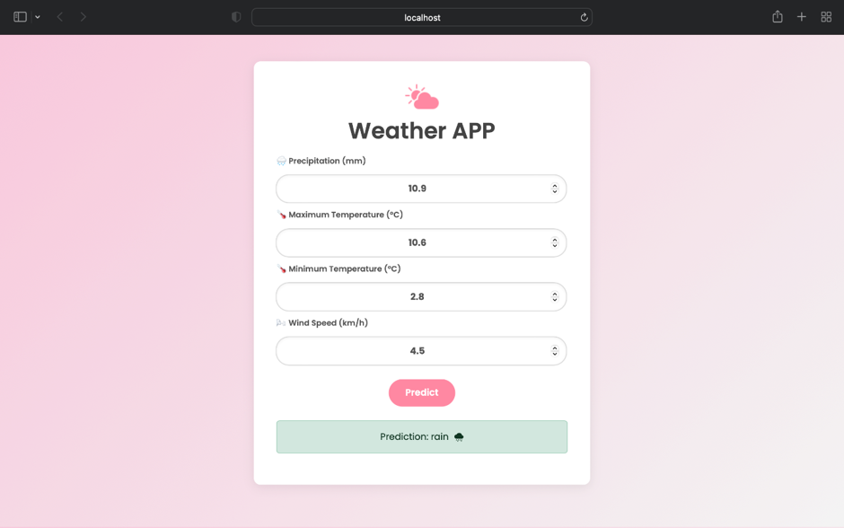
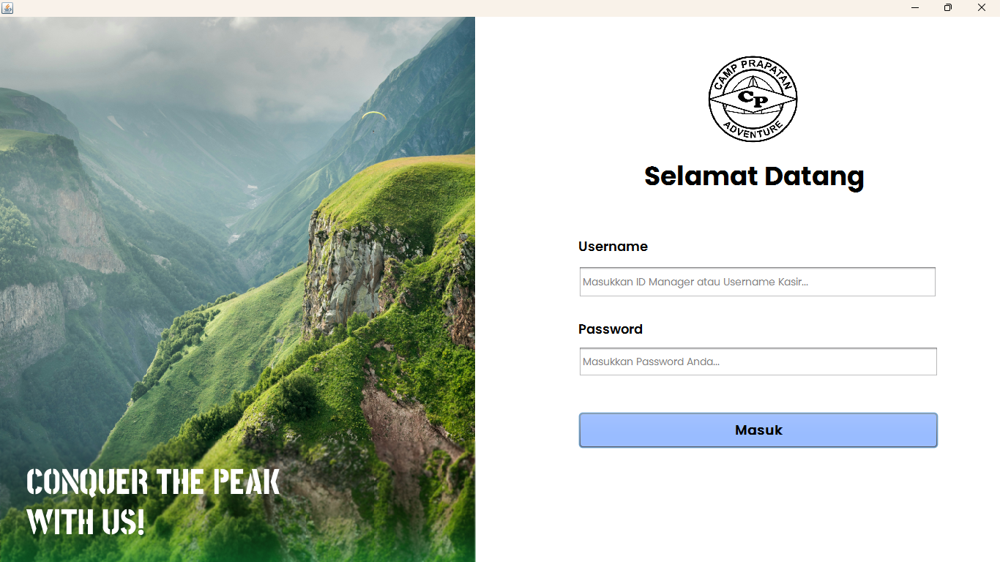
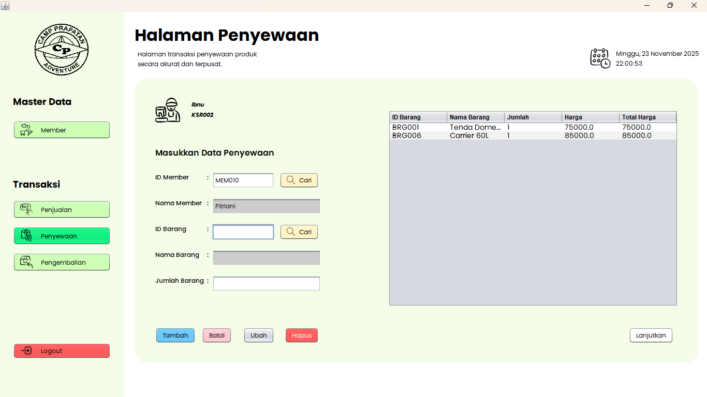

Opinia
Platform analisis sentimen ulasan Mobile Legends: Bang Bang menggunakan Random Forest.
Halo, saya
Fresh graduate Teknik Informatika yang tertarik pada pengembangan aplikasi, pengolahan data, dan machine learning. Saya senang mengubah ide dan kebutuhan menjadi solusi digital yang bisa digunakan.
Jelajahi proyek ↓ Hubungi saya ↗Learn • Build • Improve
Saya merupakan lulusan S1 Teknik Informatika yang terbiasa mengerjakan tugas perkuliahan secara terstruktur, mulai dari memahami kebutuhan, mencari referensi, mencoba solusi, hingga melakukan pengujian dan perbaikan. Selama kuliah, saya mengembangkan beberapa proyek yang membantu saya memahami proses pembuatan aplikasi dan penerapan teknologi secara langsung.
Saya menikmati proses belajar hal baru, mengeksplorasi tools, dan menyelesaikan masalah secara bertahap. Setiap proyek menjadi kesempatan untuk meningkatkan kemampuan teknis, ketelitian, komunikasi, dan cara berpikir.
Pilih kartu untuk membaca detail dan cara kerja masing-masing aplikasi.
Analisis Sentimen Ulasan Pengguna Aplikasi Mobile Legends: Bang Bang Menggunakan Metode Klasifikasi Random Forest.
Ulasan pengguna di Google Play Store terus bertambah dan sulit dianalisis satu per satu secara manual. Opinia dikembangkan untuk membantu mengolah kumpulan ulasan dan melihat kecenderungan sentimen secara terstruktur.


Python, Google Colab, scikit-learn, TF-IDF, Random Forest, FastAPI, PHP, HTML, CSS, JavaScript, MySQL, VS Code.
Pengolahan dataset, preprocessing, pelatihan dan evaluasi model, pembuatan antarmuka web, serta integrasi model melalui API.
Accuracy 89,49%, precision 87,90%, recall 77,24%, dan F1-score 82,23%.
Aplikasi prediksi kondisi cuaca yang dikembangkan sebagai final project Studi Independen Bersertifikat MSIB 7 di TIA Academy.

Aplikasi menerima beberapa parameter cuaca sebagai input, kemudian mengirimkannya ke layanan prediksi untuk menghasilkan perkiraan kondisi cuaca.
Detail model dan dataset final tidak ditambahkan secara spekulatif. Penjelasan mengikuti tampilan aplikasi dan laporan MSIB.
Python, machine learning, FastAPI, REST API, Postman untuk pengujian endpoint, dan web interface. OpenWeather API juga dipelajari dalam latihan pengembangan API selama program.
Pengolahan data, pengembangan model prediksi, integrasi API, pengujian request-response, debugging, dan penyajian hasil ke antarmuka.
MSIB Angkatan 7, Java & Python for Data Science with BNSP Associate Data Scientist, TIA Academy, 6 September–31 Desember 2024.
Aplikasi desktop untuk mendukung pengelolaan data member, barang, penjualan, penyewaan, pengembalian, dan laporan toko perlengkapan camping.
Operasional toko membutuhkan pencatatan transaksi dan stok yang rapi. Aplikasi membantu kasir dan manajer mengelola aktivitas toko melalui satu sistem desktop.


Java dan NetBeans IDE sebagai lingkungan pengembangan aplikasi desktop. Detail database/library tidak ditebak dan dapat ditambahkan setelah dicek dari source code.
Master data, pencatatan transaksi, perhitungan total, pembaruan stok, pengembalian barang, dan penyusunan laporan.
Video penjelasan/demo aplikasi Camp Prapatan Adventure.
Tonton video KKP ↗S1 Teknik Informatika • Sarjana Komputer (S.Kom.)
IPK 3,69 / 4,00Sekolah Menengah Atas
Java & Python for Data Science with BNSP Associate Data Scientist
915 jam pembelajaran • Sertifikat Studi Independen Bersertifikat
Terlibat dalam kepanitiaan kegiatan sarasehan di SMA sebagai bagian dari tim ketua sekaligus tim sponsor. Pengalaman ini melatih koordinasi, komunikasi, kerja sama tim, dan pendekatan kepada pihak eksternal.
Python · Java · PHP · HTML · CSS · JavaScript
Scikit-learn · FastAPI · TF-IDF · Random Forest · MySQL · Postman
VS Code · NetBeans · Google Colab · GitHub · Git
Terbuka untuk kesempatan kerja, kolaborasi, dan pengalaman baru di bidang teknologi informasi.
✉ adindafina02@gmail.com GitHub ↗✦